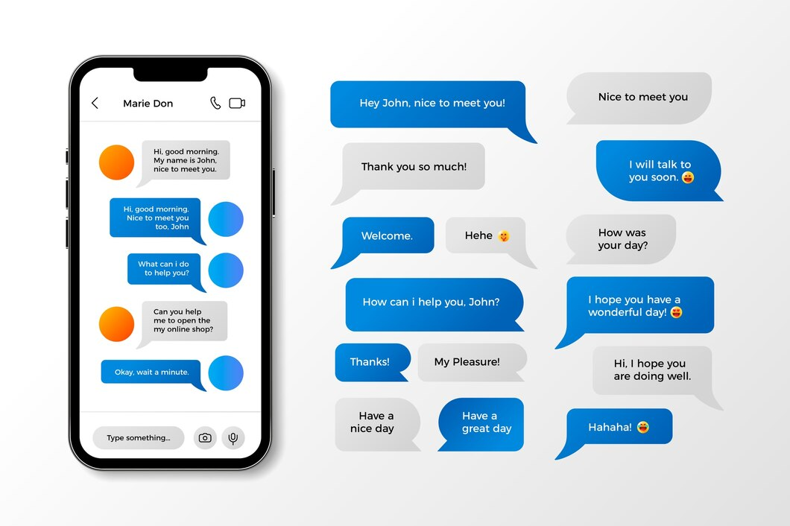

URL Shortener (Backend Development)
Description: Developed a URL shortener application that allows users to shorten long URLs and track click-through analytics. The project involved building a RESTful API using Node.js and Express, along with a MongoDB database for storing shortened URLs and related metadata. Integrated the URL shortening logic and handled redirection requests for shortened URLs.
Skills: API development, URL handling, MongoDB, Express, Node.js, RESTful services
E-commerce Website (Full-stack Development)
Description: Built a fully functional e-commerce platform enabling users to browse products, add them to the shopping cart, and complete purchases via integrated payment systems (e.g., Stripe). Developed both the frontend using React.js and the backend using Node.js and Express, with data storage managed through MongoDB. Implemented user authentication, product CRUD operations, and an admin dashboard.
Skills: Full-stack development, React.js, Node.js, Express, MongoDB, Stripe API, JWT Authentication
Chat Application (Real-Time Communication)
Description: Designed and developed a real-time chat application where users can create chat rooms, send messages, and receive notifications. The app was built using React.js for the frontend and Node.js with Socket.io for real-time communication. Integrated user authentication to allow secure access to private chats and implemented message persistence with MongoDB.
Skills: Real-time communication, Socket.io, React.js, Node.js, Express, MongoDB, WebSockets

Machine Learning Project (Data Science/ML)
Description: Built a machine learning model to solve a real-world problem (e.g., predicting house prices, classifying images, etc.) using Python and popular libraries such as scikit-learn, TensorFlow, or Keras. Preprocessed the data, trained multiple models, evaluated their performance, and deployed the final model for real-time predictions.
Skills: Machine learning, data preprocessing, model training, scikit-learn, TensorFlow, Keras, Python
Budget Tracker (Full-stack or Frontend Development)
Description: Developed a budget tracking web application where users can track their income, expenses, and categorize their spending. The application provides insights into monthly budgeting, visualized through graphs and charts. Built the frontend with React.js and utilized Node.js and MongoDB for backend development (if full-stack). Implemented user authentication and secure data storage.
Skills: Full-stack development, React.js, Node.js, MongoDB, data visualization, user authentication